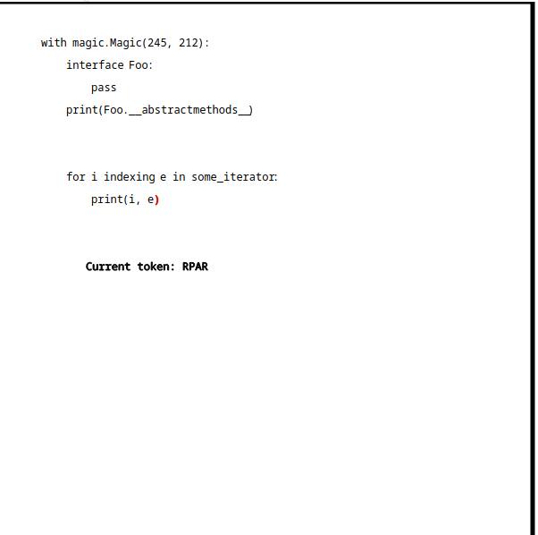

Have you ever wondered what if some rejected ideas were actually implemented into python? How would they look like in the real code? Would they actually make a difference or not? To answer these questions I built up a project called PEPGrave. It is still a work in progress because of I dont have much time to implement other PEPs and clean up stuff but the core idea works (at least in some cases).
The project aims to run python code that is written using these features, and in the underlying system it gets transformed into valid python code. A single example would be PEP 313. It is a PEP about bringing in roman literals as python numbers. I found it quite interesting, and it was the first PEP I actually implemented in an old version of PEPGrave. So, PEPGrave takes a python source code like this;
from pepgrave import magic
with magic.Magic(313):
print(IV)
from pepgrave import magic
with magic.Magic(313):
print(4)
__internal_magic. What does __internal_magic do?
def __internal_magic():
main = __import__("__main__")
main_tree = fix_file(open(main.__file__))
exec(compile(main_tree, main.__file__, "exec"), main.__dict__)
exit()
It imports the module that imported it. Then reads the source of the module and does some transformations to it and gets the fixed AST of the real source. Then executes that source and exits. Underlying fix_file runs an ast.NodeVisitor subclass on the original tree to find all positions where a transformation is needed.
class _PatternFinder(ast.NodeVisitor):
def visit_With(self, node):
if (
len(node.items) > 0
and isinstance(node.items[0], ast.withitem)
and isinstance(node.items[0].context_expr, ast.Call)
and self.unparse(node.items[0].context_expr.func)
):
inital_node = node
if len(node.items[0].context_expr.args) < 1:
raise SyntaxError(
"pepgrave.Magic should be called with 1 pep id"
)
peps = PEP.from_id_seq(
pep.value for pep in node.items[0].context_expr.args
)
for pep in peps:
if isinstance(pep.resolver, ASTTransformer):
node = self.fix(pep, node)
ast.copy_location(node, inital_node)
return node
ast.With nodes. If the found With node provides some requirements and the name of used context manager is Magic it passes initial checks. In next, we check if the Magic called with at least 1 argument, if not we raise a SyntaxError (which can actually be pretty if give lineno/col_offset information). If there is at least one argument, we create a sequence of PEP objects with given arguments and iterate through from that sequence. This is the only AST transformer and allows valid python usage transformations (like IV but not interface Duck: pass), so we'll only fix the PEPs that can be handled through ASTTransformer. After fixing that node with all AST based PEPs and copying locations we'll return the node. You may think returning node in the NodeVisitor is useless and that is correct but the reason I'm returning this node is I don't use _PatternFinder directly. There is a subclass of _PatternFinder which also has ASTTransformer base class (multiple inheritance FTW).
class FlintAST(ASTTransformer, _PatternFinder):
def fix(self, pep, node):
fixed = pep.resolver.transform(node)
return fixed
class PEP313Resolver(ASTTransformer):
def visit_Name(self, node):
if literal := self.roman_literal_check(node.id):
constant = ast.Constant(literal)
ast.copy_location(node, constant)
return constant
self.generic_visit(node)
@staticmethod
def roman_literal_check(literal):
try:
literals = [ROMAN_LITERALS[lit] for lit in literal]
except KeyError:
return None
result = literals.pop(0)
for literal in literals:
if literal > result:
result = literal - result
elif literal <= result:
result += literal
return result
ASTTransformer subclass that hooks into the Name nodes (x, lol, IV, X, MyClass etc.). When it sees a name, it checks if this is a roman literal or not. If it is, it will create a new node (Constant) and put the numeric value of that roman literal. Lets run this;
$ cat > test.py <TokenTransformer class to transform weird, illegal python syntaxes into valid ones. For an example we might check PEP 245 and PEP 212. I want to start with giving a disclaimer these implementations are just things I thought would be good with that syntax, not directly related with the original proposals of these PEPs. PEP 245 aimed to bring a new definition called interface and PEP 212 proposed to add a counter for iteration loops.
with magic.Magic(245, 212):
interface Foo:
pass
print(Foo.__abstractmethods__)
for i indexing e in some_iterator:
print(i, e)
TokenTransformer class and transform patterns of tokens. Like there is a pattern which captures interface and then transforms it to class . This is pretty funny to play with and allows you to implement whatever you like. Let's see how fixing these tokens is implemented.
class FlintToken(TokenTransformer):
# match;
# with Magic(AST step we need to identify which PEPs are activated and which aren't. TokenTransformer isn't as flexible as ASTTransformer so we have to manually define which cases are valid, and which pattenr matches them. The pattern syntax is pretty simple, it is just a bunch of regex statements and token names.

After matching those tokens, we need to parse them one by one.
tokens = iter(tokens)
statement = next(tokens)
names = []
while current := next(tokens):
if self._get_type(current) == tokenize.LPAR:
break
else:
names.append(current)
*pep_numbers, _ = tokens
name = "".join(name.string for name in names)
with keyword, and then until we see the left parenthesis we'll store all tokens in a list called names. We need to check if the summary of all these name tokens are in Magic, magic.Magic, pepgrave.magic.Magic. And except for the last token the rest of tokens are the pep items (imagine the current token buffer like this 313, 255)). And after putting everything in their own place we crate the PEPs and do the transformation
if statement.string == "with" and name in ALLOWED_NAMES:
peps = PEP.from_id_seq(
pep_number.string for pep_number in pep_numbers
)
for pep in peps:
if isinstance(pep.resolver, TokenTransformer):
self.source = pep.resolver.transform(source)
class PEP245Resolver(TokenTransformer):
# interface ColorFishInterface
@pattern("name", "name", "colon")
def interface_transformer(self, *tokens):
interface, class_name, _ = tokens
if interface.string == "interface":
return self.quick_tokenize(
f"class {class_name.string}(__import__('abc').ABC):"
)
return tokens
interface) and another name (the class name) and after that a colon. If it matches this pattern it assigns interface and class_name to their variables and discards the colon. If the first matched name equals interface, it transforms this class to an ABC and returns the new tokens. If not it returns the old tokens. And the next one is PEP 212;
class PEP212Resolver(TokenTransformer):
# for i indexing e in sequence
@pattern("name", "name", "name", "name", "name", "name", "colon")
def indexing_transformer(self, *tokens):
statement, indexer, indexing, iteration, keyword, iterable, _ = tokens
if statement.string == "for" and indexing.string == "indexing":
return self.quick_tokenize(
f"for {indexer.string}, {iteration.string} in enumerate({iterable.string}):"
)
return tokens
enumerate. Pretty simple and straight forward, huh!
Well, as I said I didn't continue with the project so its dead. But the code is kind of up-to-date so if you want to check out, pepgrave rests under my personal github. Thanks for reading, see you in another post.